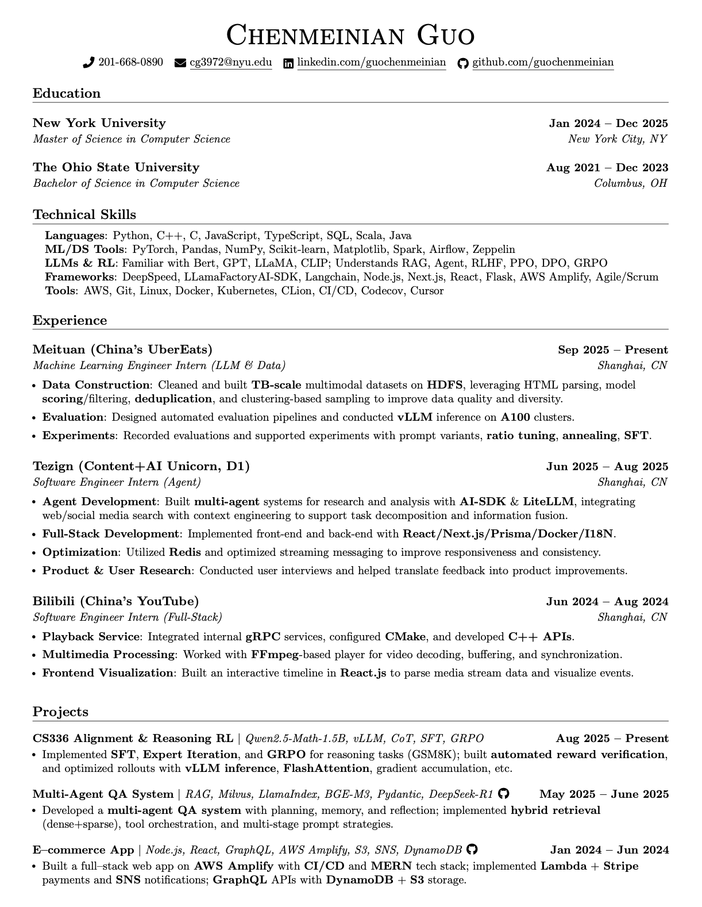

Hi there 👋
Here's a short summary/selection of my past experiences.


⬆ Tezign & Meituan
I started out with software engineering — during my time at Bilibili as a software engineer intern, I worked on gRPC integration, audio–video decoding, and network protocols, which gave me hands-on experience with low-level systems and playback engineering.
Later, at Tezign, I gained hands-on experience building AI agents and working in fast-paced startup environments. I became familiar with a modern TypeScript stack — including React, Node.js, Prisma (PostgreSQL), and Redis — and learned how to iterate quickly in production while developing a stronger sense for both functionality and product design.
Most recently, at Meituan, I’ve been working on data preparation, model evaluation, and pre-training support for multimodal large models as part of the LongCat-Flash-Omni project — involving data filtering, deduplication, importance sampling, as well as data annealing and pre-training experiments.
Here's my resume:

Download Resume